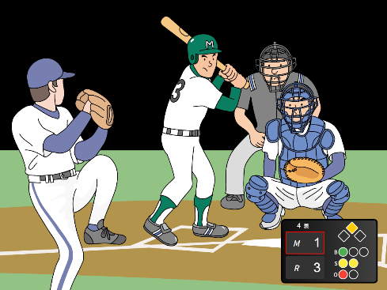
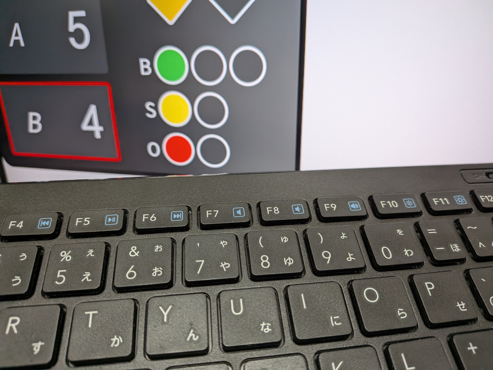
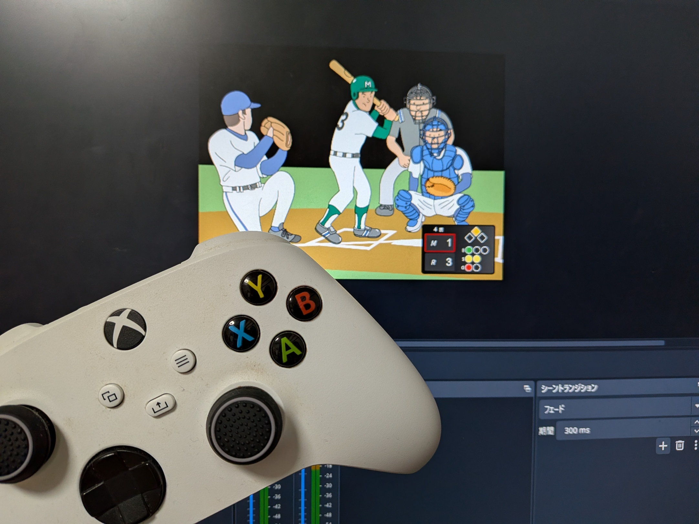

Chrome / Firefox / Edge / Safari 対応
OBS用野球中継テロップシステム
OBS Studioに使える野球のBSOカウントやスコアを表示するシステムです。
OBSに最適化
OBSでの使用を前提に開発しました。そのため、OBSでの使用に最適化されています。
動画配信サービスやビデオ通話で簡単に野球中継のテロップを表示できます。
しかも無料なので、大規模なシステムを導入する必要はありません。

キーボードで操作
基本操作は一部を除きすべてキーボードで行います。
キーボードのみで操作できるので、マウスを使う必要がありません。
また、JoyToKeyなどの外部ソフトを使用すれば、ゲームコントローラーなどでも操作できます。
※キーボード操作に関しては上記の「キーボード操作表」をご覧ください。

幅広い環境に対応
OBSが使える環境やJavaScriptが動作するブラウザであれば、どこでも使用できます。
また、キーボードを導入すればスマートフォンやタブレットなどでも使用できます。
応用すれば、草野球や少年野球でのスコア集計にも使えるかもしれません。

| 開発者用詳細 | |
|---|---|
| 使用言語 | HTML5 / CSS3 / JavaScript |
| 開発環境 | Windows11 Home 25H2 / Edge |
下のボタンから今すぐお試しを！